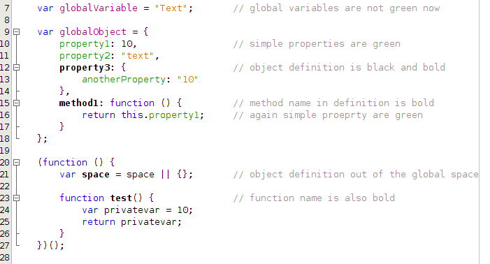
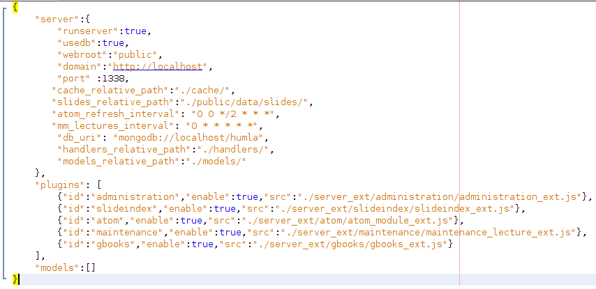

NetBeans Testing App
NetBeans 7.3
JavaScript Editor
Coloring
- Task: Basic coloring
- Copy following JS code to JavaScript file
- Result: Coloring is the same as on image below.
var globalVariable = "Text"; // global variables are not green now
var globalObject = {
property1: 10, // simple properties are green
property2: "text",
property3: { // object definition is black and bold
anotherProperty: "10"
},
method1: function () { // method name in definition is bold
return this.property1; // again simple proeprty are green
}
};
(function () {
var space = space || {}; // object definition out of the global space
function test() { // function name is also bold
var privatevar = 10;
return privatevar;
}
})();

- Task: Basic coloring - JSON
- Copy following code to JSON file
- Result: Coloring is the same as on image below.
{
"server":{
"runserver":true,
"usedb":true,
"webroot":"public",
"domain":"http://localhost",
"port" :1338,
"cache_relative_path":"./cache/",
"slides_relative_path":"./public/data/slides/",
"atom_refresh_interval": "0 0 */2 * * *",
"mm_lectures_interval": "0 * * * * *",
"db_uri": "mongodb://localhost/humla",
"handlers_relative_path":"./handlers/",
"models_relative_path":"./models/"
},
"plugins": [
{"id":"administration","enable":true,"src":"./server_ext/administration/administration_ext.js"},
{"id":"slideindex","enable":true,"src":"./server_ext/slideindex/slideindex_ext.js"},
{"id":"atom","enable":true,"src":"./server_ext/atom/atom_module_ext.js"},
{"id":"maintenance","enable":true,"src":"./server_ext/maintenance/maintenance_lecture_ext.js"},
{"id":"gbooks","enable":true,"src":"./server_ext/gbooks/gbooks_ext.js"}
],
"models":[]
}

General
- Task: Code folding
- download and open prototype.js file in the editor
- call View|Code Folds|Collapse All
- move mouse cursor over folded method and see hidden code
- call View|Code Folds|Expand All and check all is expanded
- collapse or expand fold in editor clicking plus or minus sign
- Result: Everything works
- Task: Bracket matching
- check that editor automatically highlights matching parentheses, braces, brackets, string delimiters, regular expression delimiters, etc.
- type ( , automaticaly () is written, if you type closing ) , it removes the previous )
- that works for { too - issue 195515
- Result: Everything works
- Task: Formatting
- open prototype.js or any other .js file
- break formatting as you wish (e.g. press CTRL+A and then Shift+Tab several times)
- call Format context menu in editor (Alt+Shift+F)
- Result: Everything works
- Task: Formatting II - minimized file
- open tests/js/jquery-1.7.1.min.js
- call Format context menu in editor (Alt+Shift+F)
- Result: Everything works
- Task: JSON Formatting
- use the JSON source above and paste it to NetBeans to JSON file
- press Ctrl+A and then Tab several times so the code is shifted
- call Format context menu in editor (Alt+Shift+F)
- Result: JSON is formatted correctly
- Task: Color of regular expression
- Check that following expression is in purple in editor
- Result: Everything works
var reg = /reg/;
Code completion
Open filetests/js/complexcc.jsand follow instructions there. Each instruction is in comment that starts with
// TASK // a|
This means you have to uncomment the line with "|", remove this character and invoke code completion
Hints
You can either copy following snippets or look at filetests/js/hints.js
- Task: Suspicious comparison
- Copy following JS code to JavaScript file
- Result: Editor shows hint about usage of "==".
if (a == b) {
a = 0;
}
- Task: Missing semicolon
- Copy following JS code to JavaScript file
- Result: Editor shows hint about missing semicolon.
var X = {
first: 10,
second: 'text'
}
- Task: Incorrect comma
- Copy following JS code to JavaScript file
- Result: Editor shows hint about incorrect comma character.
var y = {
first: 20,
third: 30,
};
- Task: Weird assignment
- Copy following JS code to JavaScript file
- Result: Editor shows hint about weird assignment.
while (a = b) {
a++;
}
- Task: Duplicate name of a property
- Copy following JS code to JavaScript file
- Result: Editor shows hint about duplicate name of a property. (see issue 217078)
var z = {
first: "10",
second: "text",
first: 10
};
- Task: Incorrect jsDoc documentation I
- Copy following JS code to JavaScript file
- Result: Editor shows hint about incorrect documentation for parameter foo.
/**
* Incorrect Documentation due to parameter called foo
* @param {type} param1
* @param {type} foo
* @returns {undefined}
*/
function test(param1){
}
- Task: Incorrect jsDoc documentation II
- Copy following JS code to JavaScript file
- Result: Editor shows hint about missing documentation for parameter param2.
/**
* Parameter param2 not documented
* @param {type} param1
* @returns {undefined}
*/
function test2(param1, param2){
}
jQuery
To test jQuery, you can usetests/js/jquery.js
- Task: jQuery methods
- Copy following JS code to JavaScript file and invoke cc after "."
- Result: Code completion offers jQuery methods together with help window. (see issue 216131)
$(document).
- Task: jQuery chained methods
- Copy following JS code to JavaScript file and invoke cc after "."
- Result: Code completion offers jQuery methods together with help window.
$(document).find('a').
- Task: jQuery selector completion I
- Copy following JS code and invoke cc inside quotes
- Result: Code completion offers list of css ids and classes.
$(document).find('')
- Task: jQuery selector completion II
- Copy following JS code and invoke cc inside quotes
- Result: Code completion offers list of jQuery selectors.
$(document).find(':')
- Task: jQuery selector completion III
- Copy following JS code and invoke cc inside quotes
- Result: Code completion offers list classes
$(document).find('a#foo.')
- Task: jQuery selector completion IV
- Copy following JS code and invoke cc inside []
- Result: Code completion offers list of HTML attributes (see issue 217019)
$(document).find('td[]')
- Task: jQuery hyperlinking to CSS rule
- Copy following JS code and Ctrl+Click on the rule in quotes
- Result: Appropriate css file with given rule is opened. (note tested due issue 217494)
$(".test").find('td[]')
Documentation
- continue here
- Work in progress
- References
Navigator window
- Task: Navigator
- Open tests/js/complexcc.js in IDE
- Result: Navigator window looks the same as on the picture below
- Task: Navigator basic interaction
- Try to double click on some item in Navigator. The appropriate code should be opened in IDE
- Try to sort items in Navigator
- Filters - see issue 148279
- Result: Everything works (see issue 216855)
- Task: New items in Navigator
- Create new variable for example: var myvar=new Date();
- Declare new function
- Result: Changes in source are propagated into Navigator
Custom colors in editor
Custom formatting in editor
- Task: Wrapping
- Use the code below
- Go To Tools|Options|Editor|Formatting, select JavaScript and Wrapping
- Change Variables wrapping to always
- Confirm changes and format the code
- Result: Formatted code looks like below
var a,b,c,x = function() {
return "yes"
}
Wrapping: after
var a,
b,
c,
x = function() {
return "yes"
}
- Task: Tabs and Indents
- Use the code below
- Go To Tools|Options|Editor|Formatting, select JavaScript and Tabs and Indents
- Set Tab Size to 4 and Number of Spaces per Indent to 2
- Confirm changes and format the code
- Result: Mark occurrences work
var a = {
log : function() {
}
}
Tabs And Indents: After
var a = {
log : function() {
}
}
- Task: Spaces
- Use the code below
- Go To Tools|Options|Editor|Formatting, select JavaScript and Spaces
- Uncheck "Before Parentheses" for "catch"
- Uncheck "Other" for "After Comma"
- Confirm changes and format the code
- Result: Formatted code looks like below
try {
c = [1, 2, 3]
} catch (e) {
}
Spaces: After
try {
c = [1,2,3]
} catch(e) {
}
Refactoring
Currently, NetBeans supports Instant Rename (in a single file). To use it, place your cursor inside the
identifier you'd like to rename and press Ctrl+R.
Open following file and look for "TASK" which tells you what to rename. Make sure that appropriate identifiers are renamed.
Test file:
tests/js/refactor.jsTest file 2:
tests/js/refactor2.js
Mark occurrences
var facet_ext = require('../server_ext/facet/facetengine_ext.js'); // TEST - facet_ext
var querystring = require('querystring');
app.get('/search/query/:schemakey', function(req, res){ // TEST - req and res
var page = querystring.parse(require('url').parse(req.url).query)['page'];
var baseUrl = req.headers.host+req.url+"";
if(baseUrl.lastIndexOf("?",0)>-1)
baseUrl = baseUrl.substring(0, baseUrl.lastIndexOf("?",0));
if(typeof page === "undefined"){
page =1;
}else{
page = parseInt(page);
if(page<1)
page=1;
}
facet_ext.simpleQuery(decodeURIComponent(req.params.schemakey),"", res);
});
function Foo(name){ // TEST - name; result 2 occurrences
this.name = name;
}
var name = 1; // TEST - name; nothing is highlighted
var f = new Foo("bar");
console.log(f.name); // TEST - name in Foo() is highlighted
var g = {
"name": "FooBar"
};
console.log(g.name);// TEST - name in "g" is highlighted
- Task: Mark occurrences
- Use the code above
- try mark occurrences for each comment TEST followed by name of the property to be tested
- Result: Mark occurrences work
Templates
/**
*
*/
var a ={
};
- Task: Built-in templates
- Use the code above and type "prf" on the blank line between "{" and "}"
- Press Tab
- Result: Code is expanded, the result is on the image below. Repeat the same with embedded JS code in HTML fileah
- Task: Custom templates
- Go to Tools|Options|Editor|Code Templates and select JavaScript from Language combo box
- Create your own template
- Try to use the new template in JavaScript file
- Result: Code is expanded
- Task: Documentation templates
- Again, use the code above, now place cursor on the 2nd line with asterisk
- type "au" and press tab
- Result: Template is expanded and @author is inserted